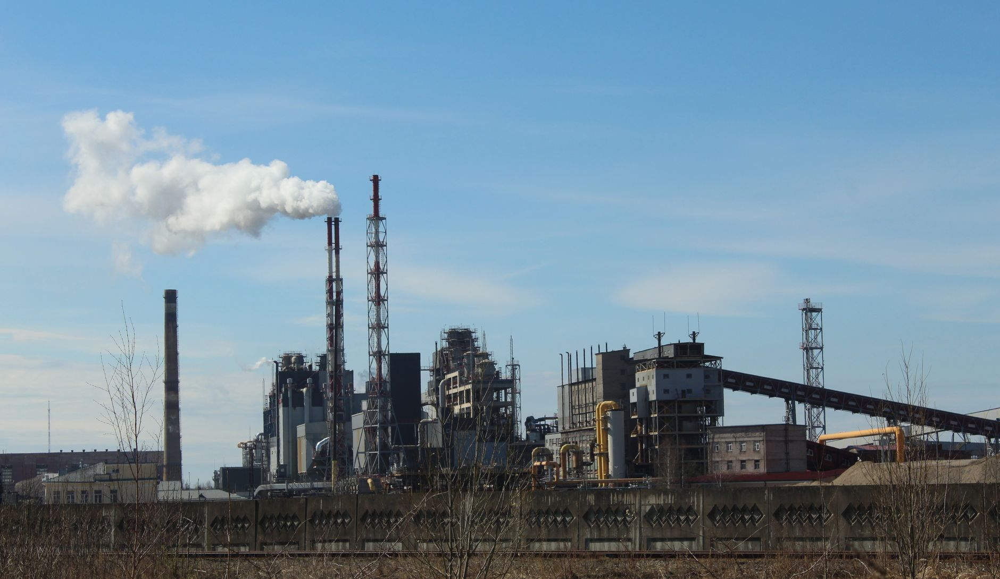

탄소·에너지·데이터 통합, 소재 납품 자격 바뀐다

삼정KPMG는 2025년 기업 경쟁력 분석 보고서에서 탄소 배출 추적, 에너지 효율 최적화, 공급망 데이터화 세 요소의 통합 관리가 제조·소재 기업의 글로벌 1차 벤더 진입 조건으로 부상했다고 명시했다. 단순 원가 경쟁력만으로 글로벌 공급망 상위 계층에 진입하는 시대가 종료됐다는 진단이다.
EU는 2026년부터 배터리 규정(Battery Regulation)에 따라 소재 공급사의 탄소발자국(Carbon Footprint) 데이터 제출을 의무화한다. 한국 양극재·음극재·전해질 공급사가 EU 시장에 납품하려면 원료 채굴부터 제품 출하까지 전 공정의 탄소 회계 시스템을 구축해야 한다. 현재 국내 소부장 기업 중 이 시스템을 완비한 곳은 대기업 계열 5~7개사에 불과한 것으로 파악된다.
에너지 비용은 반도체·디스플레이 소재 제조 원가의 25~40%를 차지한다. AI 데이터센터 확장으로 산업용 전기 수요가 급증하는 국면에서, 에너지 효율 개선 없이 소재 단가를 유지하는 것이 구조적으로 불가능해지고 있다. 한국전력의 산업용 전기 요금은 2023~2025년 사이 40% 이상 인상됐으며 추가 인상 압력이 지속되고 있다.
글로벌 공급망 재편 속 데이터화 요구는 소재 품질 인증을 넘어 실시간 재고·납기·탄소 데이터의 디지털 연동까지 확대됐다. 애플·인텔·TSMC 등 글로벌 1차 고객사들은 공급사 ESG 데이터 포털 연동을 2025년부터 입찰 필수 조건으로 요구하기 시작했다. 이 조건을 충족하지 못한 2·3차 소재 벤더는 대형 고객사 공급망에서 자동 탈락하는 구조다.
소재 납품의 게이팅 조건이 '가격+품질'에서 '가격+품질+탄소·에너지·데이터'로 3단계 확장됐다는 것이 이번 분석의 핵심이다. 현장에서 이미 감지되던 변화인데, 삼정KPMG가 공식 보고서로 확인해준 셈이다. 한국 소부장 기업들이 정책 수혜를 받으면서도 글로벌 1차 벤더 탈락 리스크를 동시에 안고 있는 역설적 상황이다.
공급망 데이터화 요구는 중소 소부장 기업에 가장 가혹하게 작용한다. IT 인프라 투자 여력이 부족한 매출 500억 원 이하 기업들은 ERP 시스템조차 미완비인 경우가 많다. 정부의 1700억 소부장 지원이 R&D에만 집중되고 데이터·탄소 인프라 지원이 빠져 있다면, 실제 글로벌 진입 장벽은 낮아지지 않는다.
탄소 추적 시스템과 에너지 효율 설비를 이미 갖춘 대기업 계열 소재 기업(SKC·솔브레인·한솔케미칼 등)은 중소 경쟁사 탈락으로 생기는 글로벌 1차 벤더 공백을 빠르게 흡수할 수 있다. EU 배터리 규정 발효 이후 납품 자격 기업 수가 급감하면 남은 공급사의 가격 협상력이 올라가는 구조다.
탄소 회계·ESG 데이터 솔루션 기업(국내 스타트업 포함)은 소부장 기업들의 의무 대응 수요로 직접 수혜를 받는다. 2026년 EU 의무화 시한 전까지 18개월 이내에 탄소 데이터 플랫폼 도입 수요가 집중될 전망이다.
탄소 회계 시스템 미비 중소 소부장 기업(매출 300억~1000억 원 구간)은 EU·미국 1차 벤더 진입이 2026년 이후 구조적으로 차단될 수 있다. 현재 이 구간 기업이 한국 소부장 전체 업체 수의 70% 이상을 차지한다.
에너지 다소비형 소재 생산 공정(산화물·형광체·고순도 금속)을 보유한 중견 기업은 한전 산업용 전기 추가 인상 시 원가 경쟁력이 급격히 약화된다. 전기 요금 10% 추가 인상 시 해당 업체 영업이익률은 평균 2~4%포인트 하락하는 것으로 업계는 추산한다.
단기(2025년): 자사 탄소발자국 산정 범위(Scope 1·2)를 최소한 내부적으로 계측할 수 있는 에너지 모니터링 시스템부터 도입하라. 전체 ERP 구축보다 공정별 전력계측기+클라우드 집계 방식이 초기 비용(3000만~8000만 원)으로 가능하다.
중기(2026년 전): EU 배터리 규정 대응이 필요한 소재 기업은 고객사의 데이터 포털 연동 요구 스펙을 지금 확인하고 역산 구축 일정을 잡아야 한다. 고객사별 요구 포맷이 다르므로, 주요 3개 고객사 기준으로 최소 공통 규격을 먼저 정의하는 것이 현실적이다.
실제 조달 현장에서는 — 글로벌 1차 고객사의 구매 담당자들이 2024년 하반기부터 국내 소재 벤더에게 'ESG 데이터 시트' 제출을 요구하기 시작했고, 준비가 안 된 업체는 견적 요청 단계에서 탈락하는 사례가 이미 나오고 있다. 소재 품질과 납기를 완벽히 맞춰도 데이터 포털 연동 하나 때문에 거래가 막히는 상황이 현실이다. 지금 당장 주요 고객사의 공급사 포털 로그인 자격부터 확인하라.
이 포스팅은 쿠팡 파트너스 활동의 일환으로 수수료를 제공받습니다.